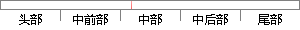

图片通过图片编码器，得到一个图片的特征；
片段位置图

相似结果|
相似片段 1： 部分:1)图片特征编码器;2)文本特征编码器;3)组合图片和文本特征的 TIRG 模块。首先,通过图片特征编码器得到图片特征,通过文本特征编码器得到文本特征;然后,通过 TIRG模块“修改”源图片特征
相似片段 2：的TIRG模块.首先,通过图片特征编码器得到图片特征，通过文本特征编码器得到文本特征；然后，通过TIRG模块“修改”源图片特征得到组合特征；最后,计算组合特征和待检索图片特征之间的匹配分数,以检索最
相似片段 3：和图片编码特征的网络模块。假设输入的问题经过问题编码器后的输出为之间的联系。该模块利用门控循环单元
相似片段 4：，整个网络结构中的损失函数采用的是简单的空间重构损失，整个网络的主要目的是根据自编码器训练出一个初始的处理受损图片的网络，通过将带掩模 mask的图片输入到训练完成的自编码器中，得到一个粗略的修复结果。然后将粗修复结果输入第二阶段的神经网络进行处理。
相似片段 5：用上一章节所设计的光照增强网络，经过卷积神经网络解码器重建得到相应的光照增强后的图片。在此阶段，使用与之前提到的本研究所设计的三种卷积神经网络编码器，在此命名为 EH，提取光照增强后生成的亮光图片的特征
相似片段 6：然后这些生成的、没有遮挡的图像块将会和原始被遮挡的人脸图片进行融合得到新的没有遮挡的人脸图像。这个新的人脸图像将作为深度特征点回归器网络的部分输入，通过对人脸外观和人脸形状增量之间的映射关系进行更
相似片段 7：结构（1）内容/风格编码器由于 FMGAN 将图片的内容与风格解开，所以编码器包含内容编码器与风格编码器。内容编码器需要保存图片的大部分特征，编码后得到高维复杂的内容向量，其网络结构和第二章的变分自动
相似片段 8：同样尺寸的大小，实现图片重构。本文基于CAE方法，利用其编码器结构对路面原始图像进行数据降维并得到图片的特征空间，嵌入聚类网络，实现路面图片的无监督深度聚类；利用其解码器结构将图片重构，获得新的图片
相似片段 9：可以在图像修复中取得良好的效果，因此对残缺图片的编码器，我们选择采用与其类似的结构。残缺图片的编码器在第二层卷积和第四层卷积中通过下采样将特征图大小压缩为原始大小的 1/16，之后通过连续的膨胀卷积来
|
※ 片段修改建议 ※
近似词参考：- 通过：经由过程
- 得到：获得
- 特征：特点 特性
系统自动生成语句：图片经由过程图片编码器，获得一个图片的特点；
注：本片段修改建议为系统自动生成，仅供参考。